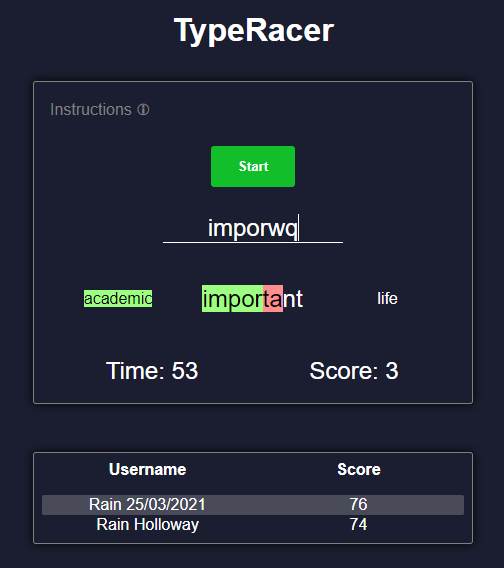

| HOME | PAST | FUTURE | COMMENTS |
As a child, I was always really into video games. From around the age of 5, I remember being hooked on this one game on the PS1 called 'Hogs of War'. It involved fighting for territory on a pig shaped continent against other armies of pigs. It was pretty fun however most of my joy came from the Oddworld franchise. Abe's Oddysee and Abe's Exodus were by far my favourite games, and still are to this day with a new remake 'New n Tasty', fantastic game, evolutionary for its time in fact.
Further down the track, in primary school around year 4, I was first introduced to Minecraft. This took over my life to some extent and I ssoon saw myself running online servers, and attempting to code my own plugins and mods. Of course minecraft is coded in Java and at that age my brain wasn't capable of understanding all of the keywords and complexities that come along with Java.
So, when I was around 11, I started programming for the first time in batch; a scripting language for Windows. I built small interactive programs that usually taught you about something like the solar system or quized you on some child-like topic. However, I soon progressed into the realm of HTML and CSS, pretty much what I'm doing right now. I remember getting so caught up in basic website design in late year 6 that I actually did a "Teach-The-Class" session teaching all my classmates how to code basic HTML + CSS. From that point on I experimented or re-experimented with several langages:
In year 9-10 I completed the Information Systems Technology (IST) and Engineering subjects which opened my eyes a little bit more to computer science as both subjects involved some form of programming at some point during the year. During IST, we also learnt a little bit of HTML + CSS and learnt to program a small Arduino board with several physical components. In engineering, we programmed one of those MindStorm robots, only we had to build them from scratch without a guide...
During my HSC years, I was enrolled in Software Design and Development (SDD) which is now labeled Software Engineering I believe. This really got me keen on CS. We learnt about programming (obviously), software development approaches, data representation, boolean algebra, logic gates, flip-flops, heaps of cool stuff that really kept me engaged. During year 12 I also coded some small interactive games (many failed, including a really bad chess incarnation) including a matching colours game, connect four, and for my SDD final project I made a typing game called TypeRacer. If you're interested, its online on Heroku at the following link:
Rain Holloway - TypeRacer 